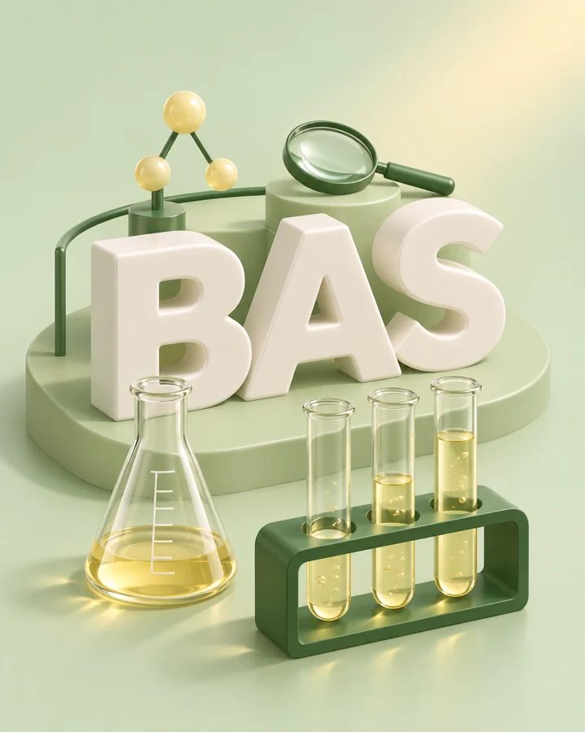

Skills Builder
Universal Framework 2.0Choose a skill to see what it means.
Al Bashaer High School · Cycle 3
Bashaer Science School Magazine
A science magazine written by our students.
Science Club
See what Cycle 3 students do together, from hands-on experiments to science challenges.
Explore the clubExplore by topic
Tap a light bulb to open its section.
Swipe sideways to see all nine sections.
The Issue 1 Lab
Browse all issues
Articles in the rack
Choose a test tube to open its article.
Loading articles…
More articles from Issue 1
Student Voices
Meet all the studentsTap a student figure to see their photo through the lens.
Loading students…
Editor’s Note
Welcome to the very first issue of BAS, a science magazine created by curious students who believe that science is not just something we learn in the classroom—it is all around us.
In this issue, our young scientists invite you to explore fascinating questions, discover surprising facts, and look at the world through a scientific lens. From the human body and nature to space, technology, and the mysteries of everyday life, each article is a journey of curiosity and discovery.
BAS is more than a magazine. It is a space where students can ask questions, investigate ideas, share knowledge, and turn their curiosity into scientific stories.
We hope that every page makes you wonder, “Why?”, “How?”, or simply “What if?”—because every great scientific discovery begins with a question.
So, turn the page, stay curious, and enjoy discovering science with us!
Welcome to BAS — where curiosity becomes discovery.
مرحبًا بكم في العدد الأول من BAS، المجلة العلمية التي أبدعها طلاب شغوفون بالمعرفة ويؤمنون بأن العلم ليس مجرد مادة نتعلمها في الصف، بل هو موجود من حولنا في كل مكان.
في هذا العدد، يدعوكم علماؤنا الصغار إلى استكشاف أسئلة شيّقة، واكتشاف حقائق مفاجئة، والنظر إلى العالم من منظور علمي. من جسم الإنسان والطبيعة إلى الفضاء والتكنولوجيا وأسرار حياتنا اليومية، كل مقال هو رحلة في عالم الفضول والاكتشاف.
BAS ليست مجرد مجلة، بل هي مساحة يستطيع فيها الطلاب طرح الأسئلة، واستكشاف الأفكار، ومشاركة المعرفة، وتحويل فضولهم إلى قصص علمية.
نأمل أن تجعلكم كل صفحة تتساءلون: «لماذا؟» أو «كيف؟» أو ببساطة «ماذا لو؟»، لأن كل اكتشاف علمي عظيم يبدأ بسؤال.
لذلك، اقلبوا الصفحة، حافظوا على فضولكم، واستمتعوا باكتشاف العلم معنا!
أهلًا بكم في BAS — حيث يتحول الفضول إلى اكتشاف.